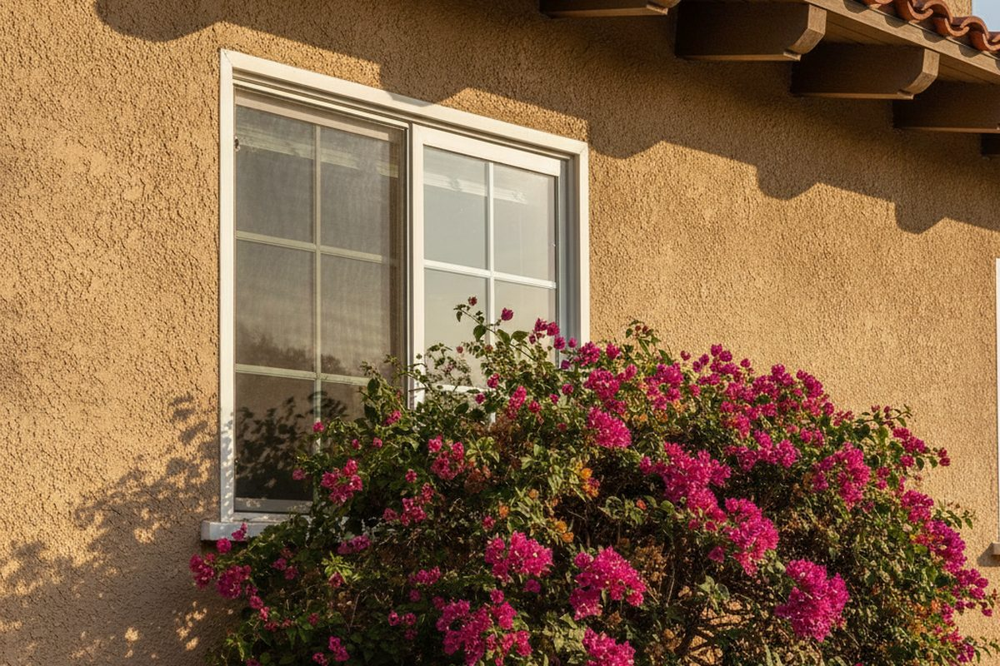

Proposition 19 narrowed California's parent-to-child exclusion sharply. Where an inherited home once kept its old assessed value in many cases, today only a limited amount of value is excluded and the rest is reassessed at current market value. Knowing the current value before you act is the difference between a planned decision and an unpleasant letter from the assessor.

What Prop 19 Changed
Under the current rules, the exclusion for a transferred family home applies only if the child makes it a principal residence, and only a capped amount of value is protected. Anything above that cap is added to the taxable base. The size of that exposure depends entirely on the property's current fair market value — a number the county will determine with or without your input.
I am an appraiser, not a tax advisor or an attorney, and Prop 19 planning deserves one of each. What I provide is the valuation input they need to model the outcome.
Before the Transfer, Not After
The most useful time to order this appraisal is while the transfer is still a decision rather than a recorded fact. With a credible current value in hand, your attorney or CPA can compare the property-tax consequence of transferring now, holding, or selling, and you can choose with the numbers visible.
Supporting a Claim or Challenging a Reassessment
If the assessor's determination of current market value appears high, an independent appraisal is the evidence an appeal is built on. These assignments overlap closely with my
property tax appeal work, and the same report often serves both purposes.
Base-Year Value Transfers for Older Homeowners
Prop 19 also lets homeowners over 55, and those who are severely disabled or lost a home to a wildfire or disaster, carry a base-year value to a replacement residence anywhere in California. Those claims compare the values of two properties, and I can appraise both.
Where I Can Take This Assignment
Two counties — San Diego and Riverside — I cover in person, which opens up the inspection-based report types. Everywhere else in California I work by desktop appraisal, and that reaches every one of the state's 58 counties. This site carries dedicated pages for 126 communities in 17 of them.
Getting a Figure From Me
The schedule opens at $299 and I pin down your number before any work begins. The whole fee schedule is published here; alternatively, describe the property and why you need it valued and I will come back with a price.